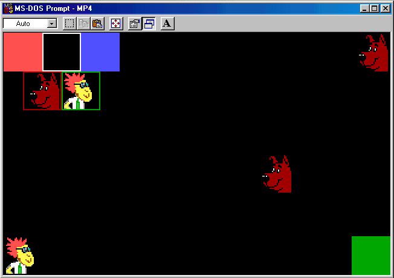

| ECE291 |
Computer Engineering II |
Lockwood, Spring 1999 |
Machine Problem 4
Graphic and high-speed image processing routines
| Assigned |
Thursday, March 25, 1999 |
| Due Date |
Tuesday, April 6, 1999, 5pm |
| Purpose: |
Video graphics and animation
|
| Points | 50 |
Introduction
Over the course of the next two machine problems,
we will implement the game of tag in a virtual environment.
The rules of tag are simple. The person that is it
chases after everyone else. Upon tagging someone,
that person become it.
Our game will be played in the safety of the ECE291 lab
using Ethernet and VGA video graphics.
For MP4, we will implement the graphic
functions to represent ourself in the game as
a bitmapped image (BMP). Our program will allow us
to move our icon over a mode-13h VGA graphics display.
For MP5 (the 2nd half of this assignment),
we will use NetBIOS's datagram group service to
transmit our images and
movements to the other players on the network.
Each player sees an identical view of the game from their own machine.
Up to 63 players can play the game at once.
Video Graphics Implementation
To create complex graphic images, it is convienient to use existing
software tools and standard image file formats. For this MP, we will use
Corel PhotoPaint to create
BMP files. To standardize the palette entries,
we will limit ourselves to 16-colors of the default palette.
All images for this MP have the dimensions of 32x32 pixels.
For this machine problem, we will write the following
routines to load, store, and draw these images on the screen.
A screen dump of the running program is shown below:

Video Graphic Routines
- All routines should preserve the values of
any registers modified
- Use proper segments where needed
- DrawBox
- Purpose: Draw a filled square on the screen
- Inputs:
- AL: Color
- DI: Screen location (top-left corner)
- Output: Writes directly to screen
- Description:
This routine draws a 32x32 filled square on the screen
using the palette number specified in AL.
- Notes:
- This will be a frequently-used routine for this MP.
It should be optimized for performance using a 32-bit register
(386, 486) and string operations.
- DrawEmptyBox
- Purpose: Draw an empty square box on the screen
- Inputs:
- AL: Color
- DI: Screen location (top-left corner)
- Output: Writes directly to screen
- Description:
This routine draws an empty 32x32 square box
on the screen using the palette number specified in AL.
Pixels inside the box should not be affected by this call.
- Notes:
- This will be a frequently-used routine for this MP.
It should be optimized for performance using a 32-bit register
(386, 486) and string operations where possible.
- DrawBMP
- Purpose: Write an image to the screen
- Inputs:
- AX: Image Number (0..63)
- DI: Screen location (top-left corner)
- Variable ImageArray
- Output: Writes directly to screen
- Description:
This routine draws the AXth image from ImageArray
to the VGA display.
DI is specified as a offset on a mode-13h screen.
- Notes:
- This will be a frequently-used routine for this MP.
It should be optimized for performance using a 32-bit variant
of the repeating string operations.
- LoadBMP
- Purpose: Load a BMP file from disk to memory
- Input:
DX: Pointer to the null-terminated string with the file name
- Output:
Contents of file stored in Variable BMP
- Description: This routine uses DOS INT 21h
services to open and read a file from the disk.
The contents of the file should be stored in the variable called BMP.
- Notes:
- The variable BMP is located in a different segment.
The segment can be accessed as Seg BMP.
- The structure of the BMP file is given to you in the source code.
- Null-terminated strings end with ASCII 0.
- If the file cannot be read, switch back to text-mode video
and print an error message and terminate the program.
- StoreBMP
- Purpose: Convert BMP data and store to image array.
- Inputs:
- AX: Image Number (0..63)
- DS:SI: Pointer to BMP data (Segment:Offset)
- Output:
1024 bytes written to AXth element of ImageArray
- Description:
This routine converts a 16-color, 32x32-pixel BMP image to
a VGA mode-13h formatted array of bytes and stores the data
in an array.
- Notes:
- The variable ImageArray is located in a different segment
- BMP files store rows from the bottom up.
- ImageArray uses consecutive memory locations to store
64 images of 1024 bytes in row-column format.
- The 16-color palette of the BMP images map directly into
the default 256-color palette of the VGA.
- MyImage.bmp
- Purpose: Your virtual representation
- Inputs: Artistic creation skills
- Output: 32x32, 16-color BMP image
- Description:
Use the Corel PhotoPaint program
(or another other graphic editing program of your choice),
to create an accurate image that represents yourself
in the network tag game. This image should resemble
yourself and be suitable for display to all members of the class.
- Notes:
- It is required that your image resemble your face
to the degree that everyone in the class will be able
to match your image with your face.
- Your image must have the exact size of
Height=32 pixels, Width=32 pixels
- Your image must use the same 16-color palette
as the given images in this MP.
- Save your image as an uncompressed windows BMP file
called MyImage.bmp.
- The length of your image file must be exactly
= 118 header bytes + (32*32 image pixels)/(2 pixels/byte)
= 118 header bytes + 512 image bytes
= 630 bytes.
- Hints:
- By loading an existing image from the MP4 directory,
Corel PhotoPaint will be initialized
with an image template that has the right size,
correct palette, and proper color depth.
- In Corel PhotoPaint,
you can view the palette from the
Image--ColorTable menu.
You should not change the palette entries from the values given.
- You can cut-and-paste images into your tempplate window.
Be aware, however, that some work is needed to resample
the image resolution and remap the palette.
Points
You will earn the following points for replacing each of the subroutines
with your own code.
- DrawBox: 8 pts
- DrawEmptyBox: 8 pts
- DrawBMP: 8 pts
- LoadBMP: 8 pts
- StoreBMP: 8 pts
- Myimage.bmp: 10 pts
Preliminary Procedure
- You will begin MP4 with the following files:
- MP4.EXE: Fully functional program using library functions
- MP4.ASM: Graphic Functions Framework
- LIBMP4.LIB: Working versions of all routines
- LIB291.LIB: Useful (and free) routines
- MYIMAGE.BMP: A really ugly BMP file
- DOG.BMP: Picture of a dog
- Makefile
- You can obtain these files via one of the methods listed below:
- In lab, copy all files from the MP4 directory to your directory
with the following command:
xcopy /s V:\ece291\mp4\ W:\mp4
- Alternatively,
download all files as: MP4.ZIP
MP4.ASM
PAGE 75, 132
TITLE MP4:Network Tag Graphics - Your Name
Comment *
NETWORK TAG - Graphic Routines
------------------------------
ECE291: Machine Problem 4
Prof. John W. Lockwood
University of Illinois,
Dept. of Electrical & Computer Engineering
Spring 1999
Revision 2.0
*
.MODEL LARGE ; Allow Multiple Segments to be defined
.486 ; Enable code with 32-bit registers and 486 CPU Features
; ===== Handy General MACROS & Constants =================================
CR EQU 13 ; ASCII Carriage Return
LF EQU 10 ; ASCII LineFeed
VidGrSEG EQU 0A000h
GMODE MACRO ; Set VGA to Mode=13h VGA Graphics (320x200)
PUSH AX
mov ah,00h
mov al,13h
int 10h
POP AX
ENDM
TMODE MACRO ; Set VGA for Text Mode (80x25 characters)
PUSH AX
mov ah,00h
mov al,02h
int 10h
POP AX
ENDM
;====== Bitmap structure definition =======================================
BMPTYPE STRUC
; --- BitMapFileHeader --- ; 14 bytes
BFType DB 'BM' ; File Type
BFSize DD ? ; File Size (in Bytes)
BFReserved1 DW 0 ; Reserved
BFReserved2 DW 0 ; "
BFOffBits DD ? ; Offset to start of image data
; --- BitMapInfoHeader --- ; 40 bytes
BISize DD ? ; Size of BitMapInfoHeader (28h = 40d)
BIWidth DD ? ; # Pixel Rows
BIHeight DD ? ; # Pixel Columns
BIPlanes DW 1 ;
BIBitCount DW ? ; Log2(palette size) = 4 for 16-color image
BICompression DD 0 ; RGB = 0 = Uncompressed
BISizeImage DD ? ; Size of Image (Bytes)
BIXPelsPerMeter DD ? ;
BIYPelsPerMeter DD ? ;
BIColorsUsed DD 0 ; 0=All
BIColorsImportant DD 0 ;
; --- Color Table --- ; 64 Bytes
RGBQuad DB 16 dup ( 4 dup(?) ) ; Blue, Green, Red, Unused
; --- Image Data Follows ; n Bytes
ImageData DB 512 dup(0) ; Image data (bottom row first)
BMPTYPE ENDS
;====== Externals ========================================================
; -- LIB291 Routines (Free) --
extrn dspmsg:near, dosxit:near, kbdin:near
; -- LIBMP4.LIB Routines (Write these) --
extrn LibLoadBMP:near
extrn LibStoreBMP:near
extrn LibDrawBMP:near
extrn LibDrawBox:near
extrn LibDrawEmptyBox:near
extrn MPXit:near
;====== PUBLICs ===========================================================
PUBLIC bmp ; Must be available for linkage with LIBMP4 library
PUBLIC ImageArray
;====== Stack Segment =====================================================
stkseg segment stack ; *** STACK SEGMENT ***
db 64 dup ('STACK ') ; Allocate bytes of stack memory
stkseg ends
;====== BMP Segment =======================================================
bmpseg segment public ; *** BMP Segment ***
bmp bmptype < > ; Allocate bmp to hold 1 BMP image
bmpseg ends
;====== Image Segment =====================================================
imageseg segment public ; *** IMAGE Segment ***
ImageArray db 64 dup( 1024 dup(1) ) ; Allocate memory to hold images
; 64 Images of 1024 bytes, each colored blue (palette #1)
imageseg ends
;====== Code/Data segment ================================================
cseg segment public 'CODE' ; *** CODE SEGMENT ***
assume cs:cseg, ds:cseg, ss:stkseg, es:nothing
crlf db CR,LF,'$'
;====== Procedures =======================================================
; Your code goes here !
LoadBMP PROC NEAR
Call LibLoadBMP ; Replace with your code!
RET
LoadBMP ENDP
StoreBMP PROC NEAR
Call LibStoreBMP ; Replace with your code!
RET
StoreBMP ENDP
DrawBMP PROC NEAR
Call LibDrawBMP ; Replace with your code!
RET
DrawBMP ENDP
DrawBox PROC NEAR
Call LibDrawBox ; Replace with your code!
RET
DrawBox ENDP
DrawEmptyBox PROC NEAR
Call LibDrawEmptyBox ; Replace with your code!
RET
DrawEmptyBox ENDP
;====== Main =============================================================
MyImage db 'MyImage.BMP',0 ; Null-terminated Filename
DogImage db 'Dog.BMP',0
Main PROC far
MOV AX,CS
MOV DS,AX
; The following code exercises the graphic functions
; that you will be using for the network tag game.
; Use this code to verify that your routines implement the
; same functionality as that of the library routines!
MOV DX, offset MyImage
Call LoadBMP ; Load MyImage.BMP image from disk
PUSH DS
MOV AX,Seg BMP
MOV DS,AX
MOV SI,Offset BMP
MOV AX,0
Call StoreBMP ; Store and expand BMP image to
POP DS ; Location 0 of Image array
MOV DX,offset DogImage
Call LoadBMP ; Load Dog.BMP from disk
PUSH DS
MOV AX,Seg BMP
MOV DS,AX
MOV SI,Offset BMP
MOV AX,5 ; Store and expand BMP image to
Call StoreBMP ; Location 5 of Image array
POP DS
GMODE
MOV DI,0
MOV AL,8+4; Bright Red
Call DrawBOX ; Draw box at top-left of screen
Call KBDin ; Wait for keypress
MOV DI,32
MOV AL,8+7; Bright White
Call DrawEmptyBOX ; Draw White empty box
Call KBDin ; Wait for keypress
MOV DI,64
MOV AL,8+1; Bright Blue
Call DrawBOX ; Draw Blue box
Call KBDin ; Wait for keypress
MOV AX,5 ; Dog
MOV DI,320-32 ; Draw dog at right of screen
Call DrawBMP
Call KBDin ; Wait for keypress
MOV AX,0 ; MyImage
MOV DI,(200-32)*320
Call DrawBMP ; Draw MyImage at bottom, left of screen
Call KBDin ; Wait for keypress
MOV DI,(200-32)*320+320-32
MOV AL,2 ; Green
Call DrawBOX ; Draw Green box at bottom, right of screen
Call KBDin ; Wait for keypress
MOV DI,320*32+16
MOV AX,5 ; Dog
Call DrawBMP
Call KBDin ; Wait for keypress
MOV AL,4 ; Red
Call DrawEmptyBox ; Draw dog in empty red box
Call KBDin ; Wait for keypress
MOV DI,320*32+48
MOV AX,0 ; Dog
Call DrawBMP
Call KBDin ; Wait for keypress
MOV AL,2 ; Green ; Draw MyImage in empty green box
Call DrawEmptyBox
Call KBDin ; Wait for keypress
; Animate image across screen
MOV DI,320*100 + 320-32 ; Start at Row=100, Right side of screen
MOV CX,320-32 ; Move across entire width of screen
MOV AX,0000h
MOV ES,AX ; Load ES:SI with addres of system timer
MOV SI,046Ch ; (increments 18 times/second)
MOV EDX,ES:[SI] ; Load EDX with current tick count.
Animate:MOV AX,5
Call DrawBMP
Waiting:CMP EDX,ES:[SI] ; Pause until time increments by one tick
JE Waiting ; ( tick will increment every 1/18 of second)
MOV EDX,ES:[SI]
MOV AL,0
Call DrawBOX
DEC DI ; Animate movement
LOOP Animate
Call Kbdin ; Wait for keypress
TMODE ; Switch back to text-mode video
Call MPXit ; Exit
Main ENDP
;====================================================================
cseg ENDS
END MAIN